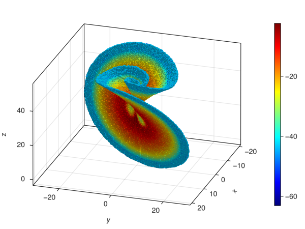

Transfer Operator and Box Measures
Mathematical Background
The following description is given in [7].
The transfer operator $f_{\#}$ w.r.t. $f$ is defined for measures $μ$ through the equation
\[(f_{\#}\,\mu) (A) = \mu (f^{-1}(A)) \quad \text{for any} \ \ A \ \ \text{measurable}\]
This is a bounded linear operator on the space of finite signed measures. We will use an approximation for $f_{\#}$ which maintains the eigenvalues and cyclic behavior of $f_{\#}$ commonly known as Ulam's method. In particular we are interested in measures which satisfy $f_{\#}\,\mu = \mu$, called invariant under $f$.
We enumerate the box set $B = \{ b_1, b_2, ..., b_n \}$ with integer indices and parameterize an approximate invariant measure
\[ \mu(C) = \sum_{j = 1}^n h_j \frac{m(b_j \cap C)}{m(b_j)} \quad \text{for nonnegative coefficients}\ h_1, \ldots, h_n\]
where $m$ is the Lebesgue measure. We enforce the condition $f_{\#}\,\mu = \mu$ on the box set $B$:
\[ h_j = \mu (b_j) \overset{!}{=} (f_{\#}\,\mu) (b_j) = \sum_{k=1}^n T_{jk} \cdot h_k \quad \Rightarrow \quad \text{coefficients}\ T_{jk} := \frac{m(b_k \cap f^{-1} (b_j))}{m(b_k)} . \]
The resulting matrix elements $T_{jk}$ gives the (conditional) probability that $f$ maps a point from $b_k$ to $b_j$.
The operator approximation $F♯$ can be created in GAIO.jl by calling
F♯ = TransferOperator(F, B) # `♯` written as \sharp<TAB>where F is a BoxMap and B is a box set. In this case, the codomain is generated automatically. This is not always ideal, so the codomain can be specified as an argument
F♯ = TransferOperator(F, B, R)where R is also a BoxSet.
F♯ acts as a matrix in every way, but the explicit transfer weights from $F♯$ can be generated by calling
M = Matrix(F♯)It is important to note that TransferOperator is only supported over the box set B.
Example : Invariant Measure of the Lorenz Attractor
using GAIO
# the Lorenz system
const σ, ρ, β = 10.0, 28.0, 0.4
v((x,y,z)) = (σ*(y-x), ρ*x-y-x*z, x*y-β*z)
f(x) = rk4_flow_map(v, x)
center, radius = (0,0,25), (30,30,30)
P = BoxGrid(Box(center, radius), (256,256,256))
F = BoxMap(f, P)
x = (sqrt(β*(ρ-1)), sqrt(β*(ρ-1)), ρ-1) # equilibrium
S = cover(P, x)
W = unstable_set(F, S)
F♯ = TransferOperator(F, W, W)
λ, ev = eigs(F♯)
λ3-element Vector{ComplexF64}:
1.0000000000000018 + 0.0im
0.7932752062814433 + 0.5853250447332556im
0.7932752062814433 - 0.5853250447332556imμ = log ∘ abs ∘ ev[1]BoxMeasure in 256 x 256 x 256 - element BoxGrid with 202489 boxes in its suportusing GLMakie
fig = Figure();
ax = Axis3(fig[1,1], azimuth=pi/10);
ms = plot!(ax, μ, colormap=:jet);
Colorbar(fig[1,2], ms);
Example 2: Showcase of BoxMeasure Functionalities
using GAIO
# the box [-1, 1]²
domain = Box((0.0, 0.0), (1.0, 1.0))
partition = BoxGrid(domain, (16,8))
# left / right halves of the domain
left = cover(partition, Box((-0.5, 0.0), (0.5, 1.0)))
right = cover(partition, Box((0.5, 0.0), (0.5, 1.0)))
full = cover(partition, :)128 - element BoxSet in 16 x 8 - element BoxGrid# create measures with constant weight 1 per box
n = length(left)
scale = volume(domain) / 2n
μ_left = BoxMeasure(left, ones(n) .* scale)
μ_right = BoxMeasure(right, ones(n) .* scale)
μ_full = BoxMeasure(full, ones(2n) .* scale)BoxMeasure in 16 x 8 - element BoxGrid with 128 boxes in its suport# vector space operations are supported for measures
μ_left + μ_right == μ_full
μ_full - μ_left == μ_right
μ_left - μ_full == -μ_right
2*μ_left + 2*μ_right == μ_full + μ_full
μ_left/2 + μ_right/2 == μ_full/2true# horizontal translation map
f((x, y)) = (x+1, y)
# BoxMap which uses one sample point in the center of each box
F = BoxMap(:sampled, f, domain, center, center)
# compute the transfer operator over the domain
T = TransferOperator(F, full, full)128 x 128 TransferOperator over 16 x 8 - element BoxGrid with 64 stored entries:
⎡⠀⠀⠀⠀⠀⠀⠀⠀⠀⠀⠀⠀⠀⠀⠀⠀⠀⠁⠀⠀⠀⠐⠐⠀⠀⠀⠀⠀⠀⠀⠀⠀⢀⠀⠀⠀⠀⠀⠀⠀⎤
⎢⠀⠀⠀⠀⠀⠀⠀⠀⠀⠀⠈⠠⠀⠀⠀⠀⠀⠀⠀⠀⠀⠀⠀⠀⠀⠀⠀⠀⠀⠀⠀⠀⠀⠀⠀⡀⠀⠀⠀⠀⎥
⎢⠀⠄⠀⠀⠂⢀⠀⠀⠀⠀⠀⠀⠀⠀⠀⠀⠀⠀⠀⠀⠀⠀⠀⠀⠀⠀⠀⠀⠀⠀⠀⠀⠀⠀⠀⠀⠀⠀⠀⠀⎥
⎢⠀⠀⠀⠠⠀⠀⠂⠀⠀⠀⠀⠀⠀⠀⠀⠀⠁⢀⠀⠀⠀⠀⠀⠀⠀⠀⠀⠀⠄⠀⠀⠀⠀⠀⠀⠀⠀⠀⠀⠀⎥
⎢⠀⠀⡀⠀⠀⠀⠀⠀⠀⠀⠀⠀⠀⠀⠀⠀⠀⠂⠈⠀⠀⠀⠀⠀⠀⠀⠀⠀⠀⠈⠀⠀⠀⠀⠀⠀⠀⠀⠀⠀⎥
⎢⠀⠀⠀⠀⠀⠀⠀⠀⠀⠀⠀⠀⠀⠀⠀⠀⠀⠀⠀⠡⠀⠀⠀⠀⠀⠀⠀⠀⠀⠀⠀⠀⠀⠀⠀⠀⠀⠀⠀⠀⎥
⎢⠀⠀⠀⠀⠀⠀⠀⠀⠀⡀⠀⠀⠁⠀⠀⠀⠀⠀⠀⠀⠀⠂⠄⠀⠀⠀⠀⠀⠀⠀⠀⠀⠀⠀⠀⠀⠀⠀⠀⠀⎥
⎢⠀⠀⠀⠀⠀⠀⠀⠀⠀⠀⠀⠀⠀⠀⠂⠀⠀⠀⠀⠀⠀⠀⠀⠐⠀⠀⠠⠀⠀⠀⠀⠀⠀⡀⠀⠀⠀⠄⠀⠀⎥
⎢⠀⠀⠀⠀⠀⠀⠀⠀⠀⠀⠀⠀⠀⠀⠀⠀⠀⠀⠀⠀⠀⠀⠀⠀⠀⠂⠀⠀⠀⠀⠀⠀⠀⠈⠀⠀⠀⠀⠀⠀⎥
⎢⠀⠀⠀⠀⠀⠀⠀⠀⠀⠀⠀⠀⠀⠀⠀⠀⠀⠀⠀⠀⠀⠀⠀⠀⠀⠀⠀⠐⢀⠀⠀⠀⠀⠀⠀⠀⠀⠀⠀⠀⎥
⎢⠀⠀⠀⠀⠀⠀⠀⠀⠀⠀⠀⠀⠀⠀⠀⠀⠀⠀⠀⠀⠂⠀⠀⠀⠀⠀⠀⠀⠀⠄⠀⠀⠀⠀⠀⠀⠀⠀⠀⠀⎥
⎢⠀⠄⢀⠀⠀⠀⠀⠀⠀⠀⠀⠀⠀⠀⠀⠀⠀⠀⠀⠀⠀⠀⠀⠀⠀⠀⠀⠀⠀⠀⠁⠀⠐⠀⠀⠀⠀⠀⠀⠀⎥
⎢⠀⠀⠀⠂⠀⠀⠀⠀⠀⠀⠀⠀⠀⠀⠀⠀⠀⢀⠀⠀⠀⠀⠀⠀⠀⠀⠀⠀⠀⠀⠀⠀⠀⠐⠀⠀⠀⠀⠀⠀⎥
⎢⠀⠀⠀⠀⠀⠀⠀⠀⠀⠀⠀⠀⠀⠀⠀⠀⠀⠀⠁⠀⠀⠀⠀⠀⠀⠀⠀⠀⠀⠀⠀⠀⠀⠀⠀⠀⡀⠀⠀⠀⎥
⎢⠀⠀⠀⠀⠀⠀⠀⠀⠀⠀⠀⠀⠀⠀⠀⠀⠀⠀⠀⠀⠀⠀⠀⠀⠀⠂⠀⠀⠀⠀⠀⠀⠀⠀⠀⠀⠀⠀⠠⠀⎥
⎢⠀⠀⠀⠀⠀⠀⠀⠀⠐⠀⠀⠀⠀⠤⠀⠀⠀⠀⠀⠀⠀⠀⠀⠀⡀⠀⠁⠀⠀⠀⠀⠀⠀⠀⠀⠀⠀⠀⠀⠀⎥
⎢⠀⠀⠀⠀⠀⠀⠀⠀⠀⠀⠀⠁⠀⠀⠀⠀⠀⠀⠀⠀⠀⠀⠀⠀⠀⠀⠀⠀⠀⠀⠀⠀⠀⠀⠀⠀⠀⠀⠀⠀⎥
⎢⠀⠀⠀⠀⢀⠀⠀⠀⠀⠀⠀⠀⠀⠀⠀⠀⠀⠀⠀⠀⠀⠀⠀⠀⠀⠀⠈⠄⠀⠀⠀⠀⠀⠀⠀⠀⠀⠀⠀⠀⎥
⎢⠀⠀⠀⠀⠀⠀⠀⠀⠀⠀⠀⠀⠀⠀⠀⠀⠀⠀⠀⠀⠀⠀⠀⠀⠀⠀⠀⠀⠀⠀⠀⠐⠀⠀⠀⠀⠂⢀⠀⠀⎥
⎣⠀⠀⠀⠀⠀⠀⠀⠀⠀⠠⢀⠀⠀⠀⠀⠀⠀⠀⠀⠀⠂⠀⠀⠀⠀⠀⠀⠀⠀⠀⠀⠀⠀⠀⠡⠀⠀⠀⠀⠀⎦# Compute the pushforward / pullback measures by using the transfer operator
T*μ_left == μ_right
T'μ_right == μ_lefttrueμ_full(domain) == volume(domain)true# integration w.r.t. the measures
g(x) = 2
sum(g, μ_full) == 2*volume(domain)true# vector space operations
(2*μ_full)(domain) == 2*volume(domain)true# composition of measures with scalar functions
μ_full2 = (x -> 2x) ∘ μ_full
μ_full2(domain) == 2*volume(domain)true